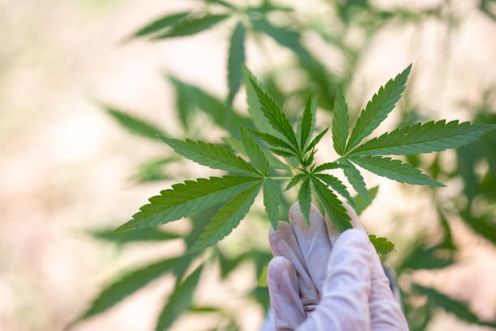
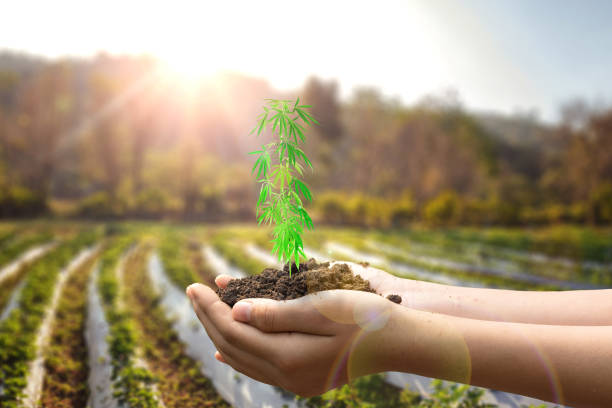

What is hydroponic cannabis cultivation?

Hydroponic cannabis cultivation is a method of growing marijuana plants without the use of soil.. Instead, plants are grown in a nutrient-rich water solution that provides all the essential nutrients needed for healthy growth.
Posted by on 2024-06-02
What is the difference between indoor and outdoor cannabis growing?
Indoor and outdoor cannabis growing are two distinct methods of cultivating marijuana plants, each with its own set of advantages and disadvantages.. The main difference between the two lies in the environment in which the plants are grown, as well as the level of control that growers have over various factors that can affect plant health and yield.
Indoor cannabis growing involves setting up a controlled environment within a grow room or tent, where growers can manipulate variables such as temperature, humidity, light intensity, and airflow to create optimal conditions for plant growth.
Posted by on 2024-06-02
What is the importance of pH levels in cannabis cultivation?

pH levels play a crucial role in cannabis cultivation as they directly affect the plant's ability to absorb nutrients and ultimately thrive.. In simple terms, pH is a measure of how acidic or alkaline a substance is on a scale of 0 to 14, with 7 being neutral.
Cannabis plants prefer slightly acidic soil with a pH level between 6 and 7.
Posted by on 2024-06-02
What is the role of nutrients in successful cannabis cultivation?
Nutrients play a crucial role in successful cannabis cultivation, as they provide essential elements that are necessary for the plant's growth and development.. Just like any other living organism, cannabis plants require a balanced diet to thrive and reach their full potential.
One of the primary functions of nutrients in cannabis cultivation is to support photosynthesis - the process by which plants convert light energy into chemical energy.
Posted by on 2024-06-02
What is the best lighting for optimal cannabis growth?

When it comes to growing cannabis, proper lighting is key to achieving optimal growth and high-quality yields.. There are a variety of lighting options available, but not all are created equal when it comes to meeting the specific needs of cannabis plants.
The best lighting for optimal cannabis growth is typically provided by high-intensity discharge (HID) lights, specifically metal halide (MH) and high-pressure sodium (HPS) bulbs.
Posted by on 2024-06-02
How to Maximize Your Cannabis Yield with Advanced Cultivation Techniques
Cannabis cultivation has come a long way in recent years, with advancements in technology and techniques that can help growers maximize their yields.. By implementing advanced cultivation techniques, growers can increase the quantity and quality of their cannabis harvests.
One key factor in maximizing your cannabis yield is controlling the environment in which your plants are grown.
Posted by on 2024-06-02
Discover the Secrets of Growing High-Quality Cannabis at Home

Growing high-quality cannabis at home has become an increasingly popular pastime for many individuals.. With the legalization of marijuana in various states and countries, more people are looking to cultivate their own plants in order to have a reliable source of high-quality product.
Posted by on 2024-06-02
Mastering the Art of Indoor Cannabis Cultivation: Tips and Tricks Revealed
Cannabis cultivation has been a popular pastime for many individuals looking to grow their own supply of high-quality marijuana.. With the rise of indoor growing techniques, more and more people are taking up the challenge of mastering the art of indoor cannabis cultivation.
Indoor cannabis cultivation offers a number of advantages over outdoor growing, including greater control over environmental factors such as temperature, humidity, and lighting.
Posted by on 2024-06-02